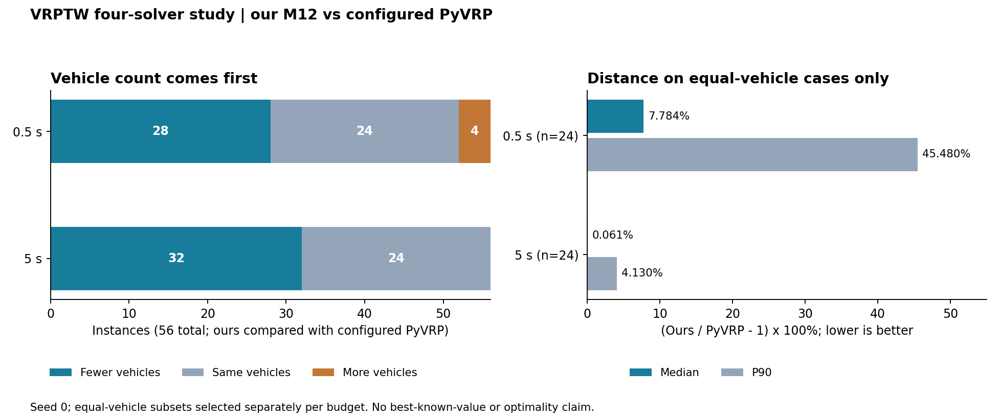
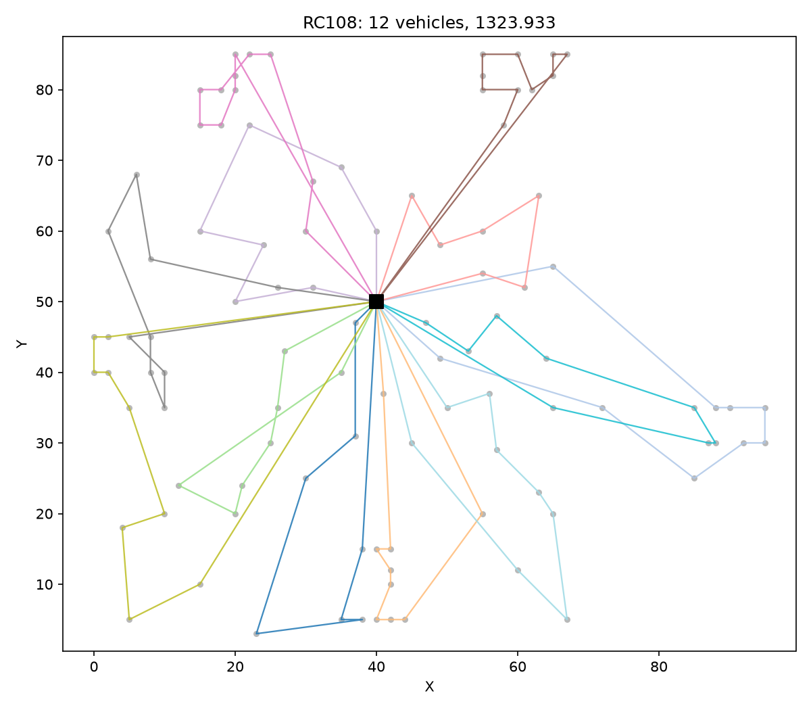
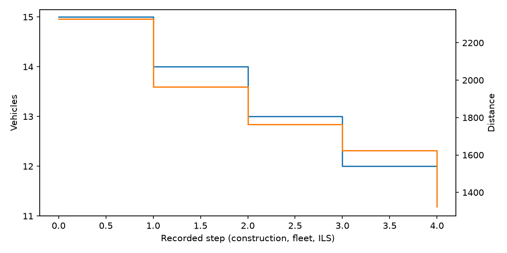

VRPTW Solver：从独立校验到原生局部搜索¶
已完成：M0～M12。 为标准 Solomon VRPTW 实现解析与独立验证、可行构造、限预算减车、局部搜索、ILS、批量报告、分阶段诊断和 C++17 / pybind11 热点后端。求解运行不依赖 PyVRP；PyVRP、OR-Tools 和 Gurobi 用作独立实验对照。
GitHub 仓库 · 固定版本 README · 四方汇总 CSV · 逐次记录 CSV
本页整理本人已完成项目的归档实测，固定版本为 9fe59ad51b95（2026-10-09），核查日期为 2026-10-11。本次建站重新汇总 448 条主实验记录并作图，没有重跑求解器。原ALNS 开发方案保留为早期设计稿，当前实际实现以可行 ILS 与原生局部搜索为主。
模型与工程实现¶
每位客户访问一次，车辆从仓库出发并返回，满足容量、服务时间窗和仓库时间限制；允许早到等待。目标按 车辆数优先、距离次优 比较。四方实验共用 round(1000 * hypot(dx, dy)) 整数距离矩阵，时间窗和服务时长也按千分位整数表达。
flowchart LR
A[Solomon TXT] --> B[Parser 与整数数据]
B --> C[可行初解构造]
C --> D[限预算减车与修复]
D --> E[可行 ILS]
E --> F[C++ 局部搜索热点]
F --> E
E --> G[独立重算容量 时间窗 覆盖与成本]
G --> H[解文件 轨迹 图表与批量报告]高层构造、减车和修复保留在 Python；原生扩展加速候选枚举、筛选与移动应用。四方实验使用默认 relocate、swap、two_opt、two_opt_star 四算子轮换，不是七算子全部开启。M11 的可选不可行搜索默认关闭；没有构建扩展时普通 CLI 可回退 Python，但复现下面的 M12 对照必须明确使用 native 后端。
M12 归档报告记录 348 项测试通过、912 条自研完整解独立重验、最终默认 CLI 批次 168/168 可行。这些是原项目迁移验收记录；本轮网站构建测试与它们分别统计。M12 验收报告
四求解器短预算实验¶
| 项目 | 协议 |
|---|---|
| 数据 | 56 个 Solomon 100 客户实例，覆盖 C / R / RC |
| 矩阵 | 56 实例 × 2 预算 × 4 求解器 × 1 种子 = 448 次主实验调用 |
| 预算与种子 | 0.5 秒、5 秒；seed=0 |
| 启动与目标 | 每例独立冷启动，不传参考路线；使用原始车辆上限，车辆数后距离 |
| 时间边界 | 求解调用包含初解构造；外部建模单列，输入读取、导入、进程启动、写报告排除 |
| 环境 | Windows x64，Ryzen 7 6800H，8 核 / 16 线程；搜索单线程、轮换次序串行运行 |
| 解释器与版本 | 自研 / OR-Tools / Gurobi：CPython 3.12.4；PyVRP：CPython 3.13.5、本地 0.13.0a0；OR-Tools 9.15.6755；Gurobi 13.0.0 |
四个常驻 worker 避免反复导入开销，搜索仍为每例冷启动。PyVRP 使用支配距离的车辆固定成本，未调用独立的 minimise_fleet()；OR-Tools 使用插入构造 + GLS；Gurobi 使用项目自写的二下标弧 MILP。成绩反映这些实现、版本与参数，不代表各库的最佳可能水平。完整协议
主表¶
| 预算 / 秒 | 求解器 | 返回完整可行解 | 总车辆 | 对 PyVRP 少 / 同 / 多车 | 同车样本 n | 距离 Gap 中位数 / P90 |
|---|---|---|---|---|---|---|
| 0.5 | 自研 M12 | 56 / 56 | 454 | 28 / 24 / 4 | 24 | 7.7841% / 45.4805% |
| 0.5 | PyVRP | 56 / 56 | 490 | 基准 | — | — |
| 0.5 | OR-Tools | 56 / 56 | 463 | 24 / 28 / 4 | 28 | 1.5331% / 9.3252% |
| 0.5 | Gurobi MILP | 27 / 56 | — | 1 / 1 / 25 | 1 | 0.0000% / 0.0000% |
| 5 | 自研 M12 | 56 / 56 | 443 | 32 / 24 / 0 | 24 | 0.0608% / 4.1299% |
| 5 | PyVRP | 56 / 56 | 490 | 基准 | — | — |
| 5 | OR-Tools | 56 / 56 | 447 | 33 / 23 / 0 | 23 | 0.0000% / 3.9338% |
| 5 | Gurobi MILP | 54 / 56 | — | 5 / 3 / 46 | 3 | 0.0000% / 6.0525% |
只在两方车数相同时计算：
正值表示更长。不是相对 BKS 的差距，也不是已证明的最优性 Gap；不同车数不计算距离 Gap。总车辆只在 56 例全部可行时填写，Gurobi 的少 / 同 / 多车只比较共同可行集合，缺解不记作其他算法质量胜出。

同车数子集按每档预算分别选择，本次均为 24 例，但不因此视为相同实例集合。图表依据四方原汇总和448 条记录投影，与固定版本实验报告的舍入结果一致。
有效改进与限制¶
- 自研从 0.5 秒增加到 5 秒后，11 例减车、39 例同车距离改善、6 例打平，没有观察到退步。这是单种子、同机这一轮结果，不是随机稳定性结论。
- 5 秒自研相对 OR-Tools 为 8 例少车、43 例同车、5 例多车；同车距离 Gap 中位数约 1.413%。因此不能只凭总车数宣称逐实例全面胜出。
- 主表 PyVRP 在 5 秒时有 55 例与 0.5 秒完全相同，需结合其严格车辆固定成本配置解读；不能将其停滞泛化为 PyVRP 库能力。
- 补充的“固定自研车辆上限、固定成本为 0”的 PyVRP 距离诊断是另一任务，5 秒同车 47 例，Gap 中位数约 7.602%，C103 仍有 46.495% 长尾。它不能替换主表的 24 例同车统计；M12 迁移报告的三种子指标也另属协议。
- Gurobi 5 秒只有 54/56 例返回完整可行解；基本 MTZ 模型的松弛较弱。未找到可行解不等于证明实例不可行，其 bound / MIP Gap 对应含车辆固定成本的标量目标，不是距离 Gap。
实际 5 秒档端到端中位数约为自研 5.0021 秒、PyVRP 5.0072 秒、OR-Tools 5.0062 秒、Gurobi 5.7977 秒；这里包含外部建模和独立验证，仍排除读入、导入与写报告。名义预算与实际返回时间分别记录，不作毫秒级速度排名。
输出示例：RC108¶
以下两图来自 M12 最终交付、RC108、seed 0、0.5 秒 的历史归档，结果为 12 车、距离 1323.933；它们不是上述四方主表的 5 秒运行。原路线图



收敛图横轴是构造、减车和 ILS 的记录步骤，不是秒数，也不是统一的 ILS 迭代计数；双纵轴分别为车辆数与距离。
运行与复现¶
项目目录名与 Python 包名不同：命令入口是 vrptw。以下从固定快照的仓库根目录执行，未安装包时设置 PYTHONPATH。先求解一例，再从原始输入独立验证输出：
固定快照的根目录包含 src/、data/、benchmarks/；若本地外层还套有文件夹，先进入这一层。单例命令用于接口验证，不等同于重跑四方实验。
完整四方重跑使用新输出目录：
需按运行说明准备 native 扩展、本地 PyVRP 构建、对应解释器和 Gurobi 许可证，并显式调整机器上的路径。只重算已保存 CSV 的汇总无需重跑搜索，标准库脚本入口与参数见同一说明；不要以一次新的运行覆盖原始档案。